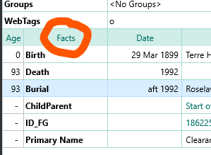
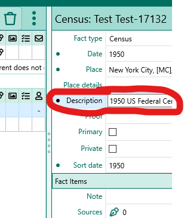
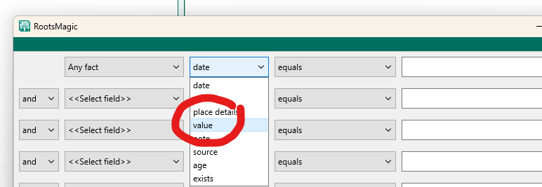

Roots Magic Thesaurus
Fact = Event = Tag
RM uses the term Fact for the items that are attached in the person edit window

Other software use the terms 'Event" or "Tag"
Some software differentiates between an Event having a date and a Fact not having a date.
RM Facts are stored in the database as rows in the EventsTable.
Fact Description = Fact Value
The Person edit window shows the field in the right side panel as Description

